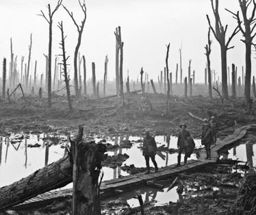
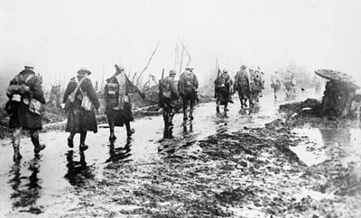

|
JUILLET Toujours
dans la région de Vimy, l'unité d'artillerie de
Charles appuie les divisions
canadiennes. Elle continue de lancer des salves de canons chaque jour sur
différentes cibles, dont Lens, Loison et cité St-Émile. La cadence est moindre qu'en juin, mais,
certains jours, plus de quatre cents salves sont tirées.
AOÛT
Les
tirs se poursuivent quotidiennement, jour et nuit. Les cibles
sont les mêmes. Certains jours les tirs s'intensifient, ainsi
le 15 août avec plus de mille cinq cents salves en appui à l'infanterie partie à
l'assaut de la "colline 70", et le 21 août avec plus
de mille trois cents salves visant surtout Lens. Le lendemain la position de la
batterie est bombardée, des munitions détruites et un canon
endommagé. La nuit suivante, on remplace le canon. Ils sont à Rollencourt,
toujours dans la région de Vimy, depuis quelques jours.
SEPTEMBRE L'unité de Charles est à Liévin, au nord de la région
de Vimy. C'est un mois tranquille, avec une moyenne de cinquante
salves
par jour, certains jours étant même sans aucun tir.
LA BATAILLE DE PASSCHENDAELE

OCTOBRE Le mois débute aussi tranquille. La batterie se prépare pour la
3ème bataille d'Ypres. À partir du 17 octobre des lignes de
wagons bougent vers le front d'Ypres, en Belgique, à
environ soixante et quinze kilomètres de Liévin. Toute la batterie est en place dès le
20 octobre,
et les salves débutent sur des batteries ennemies près de
Moorslide, au sud-est de Passchendaele. Les artilleurs visent le
clocher de Passchendaele pour calibrer leurs canons.
Les
ordres se suivent, mais la cible est toujours la même pour la
1st Canadian Heavy Battery. En bombardant Moorslide, elle couvre
le flanc droit des canadiens lancés dans la bataille de
Passchendaele.
Au cours d'une série
d'assauts déclenchée le 26 octobre, vingt mille soldats, pris sous un feu
nourri, progressent pouce par pouce, cratère par cratère. Puis, le 30
octobre, les Canadiens attaquent Passchendaele proprement dit avec
l'aide de deux divisions britanniques. Ils atteignent les abords dévastés
du village par un violent orage et, cinq jours durant, tiennent pied,
souvent empêtrés dans la boue jusqu'à la taille, sous une pluie d'éclats
d'obus allemands. Plus de quinze mille hommes laissent leur vie dans le saillant
d'Ypres en cette fin d'automne.

NOVEMBRE
La bataille fait rage. La batterie tire des salves à une cadence
d'enfer, jour et nuit, et, toujours sur Moorslide. Le support à
l'infanterie se poursuit donc, et les tirs sont souvent en
réponse à des "S.O.S. calls" lancées par les soldats
dans les tranchées ou durant leurs assauts.
 DÉCEMBRE
Le combat continue pour l'unité de Charles jusqu'au 8 décembre.
Puis, le 1st Canadian Heavy Battery retourne, par étapes, dans la
région de Vimy. Cette fois-ci les hommes sont transportés en camions. Le 12 décembre, ils arrivent dans leur ancienne ligne de
chevaux à Gouy Servins. Le maire leur alloue des
logements. Les hommes s'y reposent jusqu'au 22, l'équipement est
nettoyé et inspecté.
Le 23 décembre, l'unité bouge à Roclincourt,
quelques salves sont tirées le lendemain.
Charles part en
permission pour quatorze jours. Cette fois-ci nous connaissons sa
destination, Charles va à Bordeaux. Quant à son unité,
elle se prépare
pour Noël, un bon dîner est servi, et vingt salves sont tirées. Le
26 décembre, l'unité se divise en deux sections, une est à Liévin,
l'autre à Vimy. Ils reçoivent de nouveaux canons, des
salves sont tirées pour les calibrer.
|